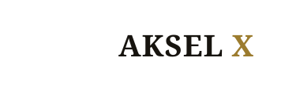

Uma identidade de luxo silencioso: fios finos, papéis nobres e um único ponto de ouro no cruzamento. Alinhada ao velho luxo europeu, para quem vende alto padrão com poucas palavras.


| Uso | Família | Estilo |
|---|---|---|
| Logotipo / títulos | Fraunces | Medium 600, letter-spacing −1, optical size display |
| Corpo / interface | Inter | Light 300, Regular 400 |
| Dados, CNPJ, documentos | IBM Plex Mono | Regular 400 |
PROPOSTA_05/ akselx_horizontal_color.svg — logotipo horizontal colorido akselx_vertical_color.svg — logotipo vertical (empilhado) akselx_simbolo_color.svg — símbolo isolado akselx_mono_black.svg — versão monocromática preta akselx_mono_white.svg — versão monocromática branca akselx_favicon_color.svg — favicon/símbolo reduzido